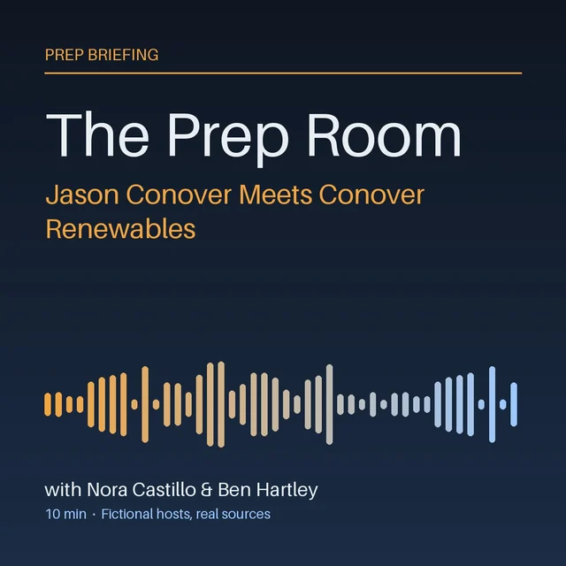

AI Lab · Live
Prep Briefing turns research into a podcast for your next big conversation.
You have a job interview or a sales call tomorrow. Give Prep Briefing your side, their side, and the event. It researches the other company, has you approve the facts and the plan, then writes a two-host episode you can listen to on the drive in.
The app runs on Streamlit’s free hosting. If nobody has used it for a while, it can take about 30 seconds to wake up.

Hear a sample episode
The Prep Room: Jason Conover Meets Ridgeline Renewables
with Nora Castillo & Ben Hartley · about 9 minutes
A mock interview prep for me. I’m real and my background is my own. Ridgeline Renewables, the job, and both hosts are invented for the demo. The voices are generated by the app.
Read the opening
NORABen, quick test. You put a turbine right behind another one, in its wake. How much energy do you lose?
BENHonestly? Depends on the wind rose. But ten, twenty percent, sometimes more.
NORAOkay, now explain that to a landowner. Or a CFO.
BENHa. That’s the hard part. I usually wave my hands a lot.
NORAJason Conover didn’t wave his hands. He built a simulator. You drag the turbines around, change the wind direction, and watch the farm’s output move. Welcome to The Prep Room. I’m Nora.
How it works
Two stages, with you in the middle. The research is cheap and quick. The long script isn’t written until you sign off on the plan.
You
Fill in three boxes
You (resume or product, stories, gaps), them, and the event. Paste text, upload files, or add links.
App
Research the other side
Plans searches, reads the pages, and pulls out facts. Each fact keeps the page it came from.
You
Approve facts & outline
See every fact and its evidence. Untick what you don’t want, edit the plan, then continue.
App
Script, card & audio
Writes the episode a segment at a time, adds a one-page reference card, and voices it as an MP3.
Why it’s more than “docs to podcast”
Tools that turn documents into podcasts only rework what you upload. Prep Briefing goes out and finds the facts, uses your own stories, and follows a plan made for the event.
Facts have to survive a check in code
For every fact, the model has to show where it found it, and plain Python confirms that the evidence is on the source page. Facts that fail are dropped, and you’re shown what was dropped. Making something up has to get past code, not just past a prompt.
Every point says where it came from
Each line of the outline is tagged: a verified fact, your own material, the job posting, or an illustration. Untick a fact and the points that depended on it are removed, not quietly relabeled.
Built for the event
An interview briefing ends in a mock round, with model answers built from your real stories. A sales briefing ends in an objection round and a specific ask. Adding a new event type means adding a template, not rewriting the pipeline.
“Sounds like a podcast” is measured
The two hosts know different things, so their questions and reactions are real. Each segment is then scored for back-and-forth: who asks questions, who follows up, speaking balance, callbacks, and lecture-style phrases. Weak segments get a targeted rewrite, and the rewrite is kept only if it scores better.
Private by design
No database. Your resume and notes stay in your browser session, and you save your own profile and client files to your computer. Research is about the organization, never about individual people.
Runs on free tiers
Built entirely on free services. Requests are kept small, the length is held to target one segment at a time, and if a model is busy the app moves to the next one.
Try it
Sample, import & score
Play the sample episode, import a script, see how it scores as a conversation, and preview the voices.
Run a full briefing
Research, script, and audio on the demo’s keys, with small daily limits. Ask me for a code.
No limits
Paste a free Gemini key and a free Tavily key in the app’s sidebar. Keys stay in your session and are never saved.
The demo runs on Gemini’s free tier, where Google may use what you submit to improve its products. Use a made-up profile on the demo, and bring your own keys for anything real.